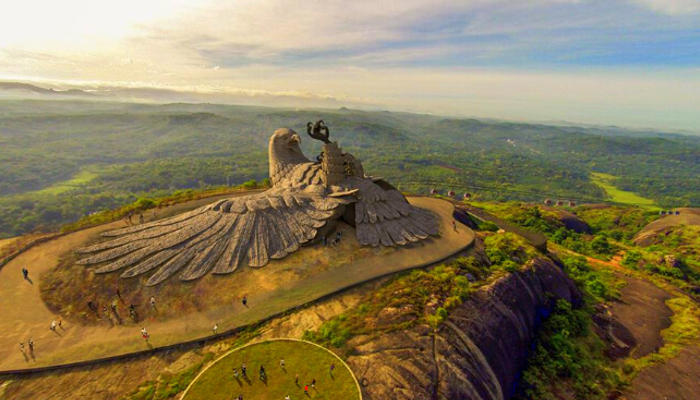

Kollam has been on the route map of spice traders for a very long time. Legendary explorers like Ibn Battuta to Marco Polo have talked about the prominence of Kollam district for centuries. Endowed with a long and scenic coastline, Kollam has many peaceful and scenic places to offer. Since it is located on the banks of Ashtamudi Lake, it is also one of the best places to go cruising in the backwaters. Here are some places to visit in Kollam that you can’t skip on your trip.
Jatayu’s Earth Centre: For Adventure
For the best of Kollam sightseeing , this is a very recent construction, the Jatayu Nature Park is a rock-themed park. The adventure park has 6D theatre an audio-visual digital room, cable car and much more. This is built to promote mythology and adventure tourism. This giant bird statue located on a hill top is certainly unique and something that shouldn’t be missed. Things to do: experience 6D theatre, do a cable car ride, see Jatayu’s statue, visit the Ayurvedic cave resort Places to stay: Woodhouse Beach Resort Timings: 9.30 am to 5.30 pm
Palaruvi Waterfalls: For Rejuvenation

Palaruvi translates to “milky streams”. This is a stunning waterfall located on the Kollam-Shencottah Road, which falls from 300 feet. An ideal time to visit this place is from June to January. Even if you visit this place on a low-season, it is a beautiful picnic spot. The 32nd highest waterfall in India, it is also known to have Ayurvedic properties. Things to do: Sightseeing, bathing in a waterfall, picnic in the woods, swimming Places to stay: Thenmala Heritage, White House, Mg Resorts, Kso Family Homes, The Kuttalam Heritage
Ashtamudi Lake: For A Houseboat Trip

This lake is the most visited lake and backwater in the state. Lush green waterways lined with palm and coconut trees, there’s no better place to start exploring Kollam that is considered to be one of the best Kollam tourist places. Ashtamudi means ‘Eight Coned’ in Malayalam. A houseboat trip to this lake is among the most popular things to do in Kollam. Things to do: Roam in houseboats, visit Kollam beach, take sunset boat cruise Places to stay: Munroe Island Lake Resort, REGANT LAKE VILLAGE, SS Ayurmadam, Club Mahindra, Punartham Serviced Villa